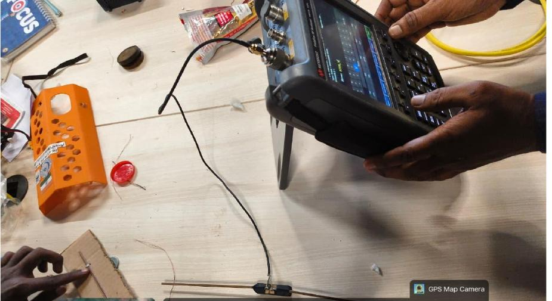
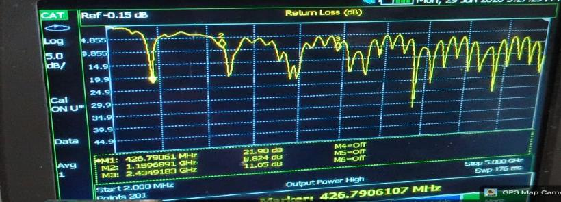
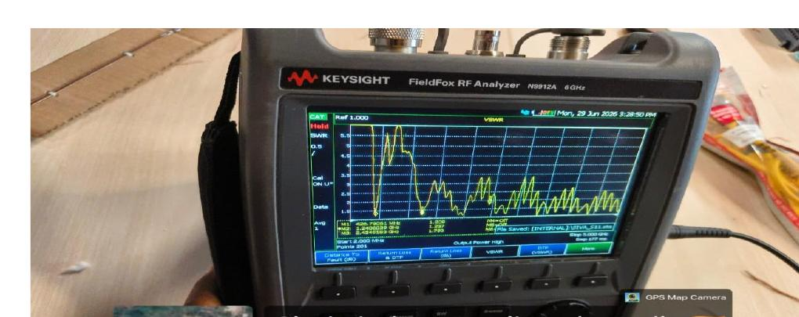

01 / RF & ANTENNA DESIGN
435 MHz.
A lesson in real-world RF.
A half-wave dipole project that took antenna equations onto the lab bench — and made the physical setup part of the engineering question.
- SETTING
- CoE – Space Technology
- WHEN
- 16–30 June 2026
- MY ROLE
- Antenna design · team member
- PROJECT
- Three-member internship team

Actual laboratory photograph from our internship report, June 2026.
Antenna theory, with a cable attached.
During the 15-day “Advanced SDR for LEO Satellite Signal Acquisition and Ham Radio Signals” internship, our team designed, fabricated and tested a half-wave dipole intended for the 435 MHz amateur satellite band.
The programme was conducted by the Centre of Excellence – Space Technology at Sri Sairam Engineering College. It combined satellite communication concepts with SDR reception, antenna work and RF measurements.
I designed the dipole.
I designed the dipole as part of a three-member project team. I also used GPredict, SDR software and RF measurement tools during the internship. The fabrication, mounting changes and final measurements described here are team work.
The calculated dimensions were a starting point. The mounting, alignment and feed connection mattered in the laboratory.
Design. Assemble. Measure. Revisit.
The report records wavelength-based sizing for a 435 MHz target, followed by a practical shortening factor of 0.95. Copper elements were used for the dipole.
| Parameter | Recorded value |
|---|---|
| Design frequency | 435 MHz |
| Length of each arm | Approximately 16.4 cm |
| Feed gap | Approximately 0.7 cm |
| Return-loss marker | 21.9 dB at approximately 426.79 MHz |
The team investigated the effect of the initial PVC support and antenna alignment, then changed the support and repeated measurements. The displayed marker is near the intended design frequency; it is not a measurement at exactly 435 MHz.




More than one experiment.
- LEO satellite tracking and pass prediction using GPredict.
- FM reception and spectrum observation with RTL-SDR, SDR# and SDR++.
- ADS-B reception practicals using RTL1090 / Dump1090.
- NOAA signal-reception exercises and satellite communication learning.
- HAM radio operating practices and antenna fundamentals.
Evidence: the jointly authored internship report, laboratory photographs and my account of the work. No claim of independent instrument calibration, flight qualification or professional RF design experience.
The setup is part of the system.
This project connected wavelength calculations to real materials, feed connections, supports and measurement traces. It gave me a more concrete reason to keep learning RF engineering: a small physical change can matter.
I’m looking for an early-career opportunity to build on this exposure under experienced engineers.
Download my RF résumé